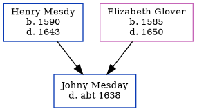

Johny Mesday - c1638
[ Home ] | [ Calendar ] | [ Surnames Index ] | [ Family History ]The child of Henry Mesdy and Elizabeth GloverJohny Mesday was the ten times great-uncle of Nigel Horne.
He died c. 16381 and was buried in Stourmouth, Kent, England on Oct 18, 16381.
Parents
- Henry was born in 1590
- Elizabeth was born in 1585
Citations
- England, Select Deaths and Burials, 1538-1991 Ancestry.com Operations, Inc.
Family Tree

Map
Generated by Ged2Site. Last updated on Apr 1, 2025